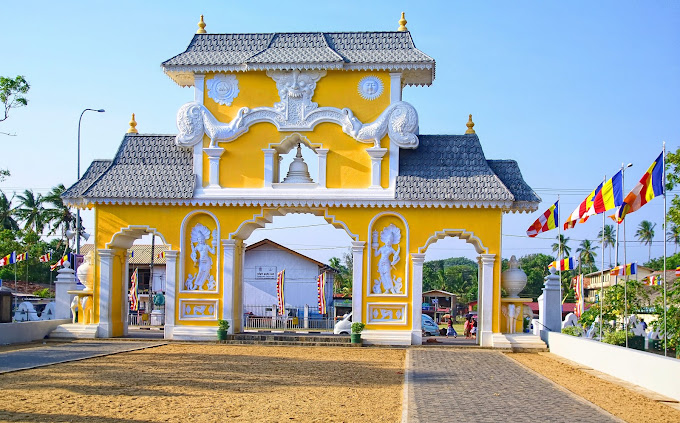

About Dondra

Dondra is a settlement on the extreme southernmost tip of Sri Lanka, in the Indian Ocean
near Matara, Southern Province, Sri Lanka. The Dondra Head Lighthouse, ruins of several
Hindu shrines of Tenavaram are located in the vicinity.
Historically known as Devinuwara temple port town or Devinuwara temple town, Dondra was
until the late 16th century a historic temple port town complex. A multi-religious site,
its primary deity was the Buddhist god Upulvan and at its zenith was one of the most
celebrated religious sites of the island, containing a thousand statues of the various
sects of Hinduism and Buddhism.
The rebuilt temple to Vishnu and the Vihara still attracts pilgrims today and in the
month of Esala (July–August) the Dondra Fair and Perahara is held for eight days.
Dondra was once the capital of the Sri Lanka.